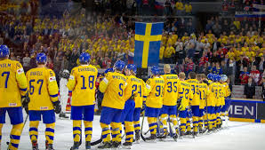
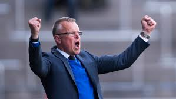

Hej läsare! Detta är en hemsida som beskriver mig. Jag heter Markus Robert Piotrowski och går på NTI Gymnasiet i stockholm. Jag gillar att spela innebandy fortboll samt spela datorspel. Jag är en person som gillar att idrotta samt vara tränare.
-
Innebandy
Mitt största intesse är att spela innebandy. Jag spelar innebandy för älta if herrjuniorer. Jag brukar spela back eller forward. Jag började spela innebandy för 2 år sedan. Innebandyn är den sport jag tycker mest om för jag gillar att spela och titta på ishockey och innebandy är den närmsta sporten till ishockey i min närhet.
-
Fotboll
Jag har spelat fotboll i ca 10 år. Jag spelar i älta if HU17 och är målvakt. Jag tycker fotboll är roligt att titta på samt spela men jag slutade med fotboll detta år för jag tyckte inte längre det var lika kul som förut.
-

-

-
Hockey
Jag spelade ishockey tills jag började sjätte klass. Jag spelade för älta if P03. Jag slutade på ishockey för jag gillade inte tränarna. Just nu är mitt intresse inte i att spela ishockey utan att titta på ishockey. Jag brukar titta på NHL lita då och då. Jag hoppas alltid att LA Kings eller New York rangers ska vinna.
-
Tränare
Jag är tränare för älta if P06 och har varigt det i snart tre år. Jag tycker det är välldigt kul att lära ut det jag kan så det är därför jag är tränare. Jag tycker också det är kul att se andra människor lyckas med något nytt vilket jag ser som tränare.
- 
- 